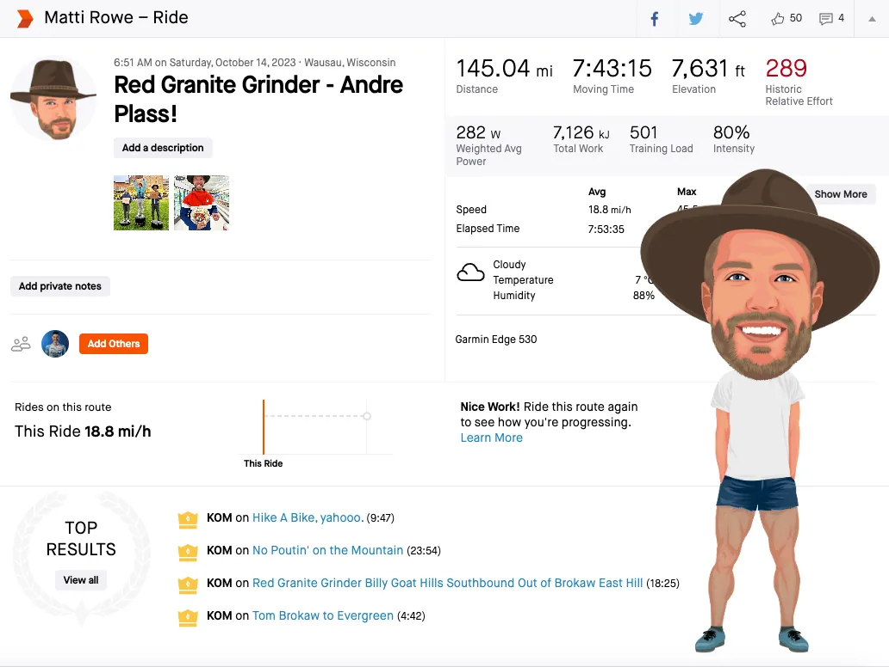
“You lost by one second?”
“Yeah, it came down to a sprint.”
“Well, how did he get ahead of you?”
“He came through the corner in my draft and started sprinting.”
“Why didn’t you sprint earlier?”
“I don’t know sprints are hard.”
“You couldn’t gain one second on him after 145 miles?”
“Geez, Ma, you can’t win ’em’ all!”
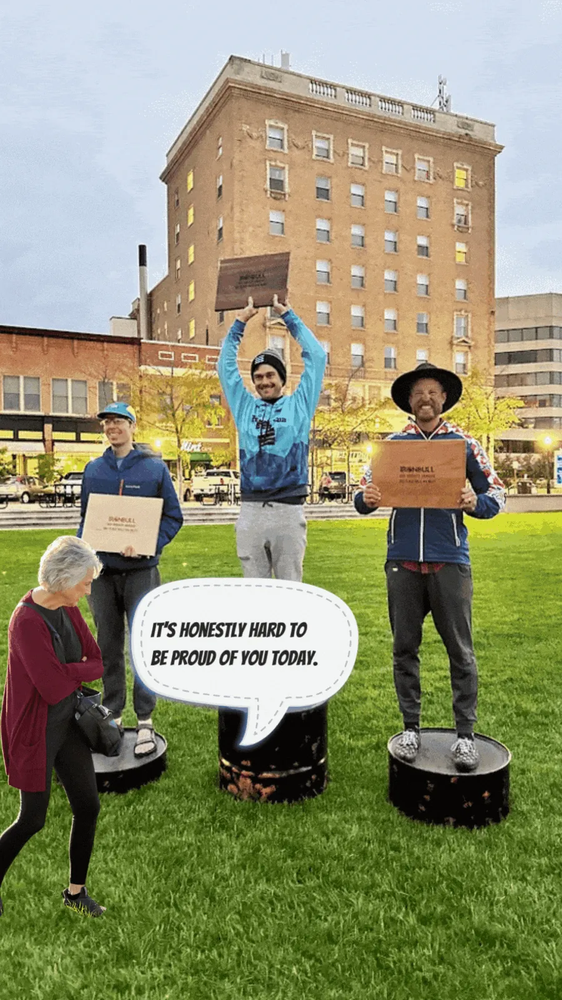
Peter Olejniczak got me. I’d won in 21′ and ’22, but in ’23, Olejniczak, the handsome, mustachioed, infinitely likable Project Echelon reigning single-speed gravel National Champion, showed up. We put on a show.
I spent all day looking at his backside, and I’m pleased to report the view was tolerable. His calves are made of granite, and he has prominent veins trying to escape his muscles on the left side. After shredding the field up on Rib Mountain, he and I, both outfitting our bikes with aero bars, began a long, steady, considerate 135-mile team time trial back to the finish line that was often absurd in our cooperation.
At the second aid station, Peter had to drop off the kids at the pool. I didn’t, as my plumbing doesn’t work while riding, and I stood there with my parents for a few extra minutes after gathering more sugary nonsense into my jersey pockets long enough that my mother commented.
“How long are you going to wait for him?”
“As long as it takes.”
“Really?”
“Yeah. Gentleman’s agreement.”
“Wow.”
We were only 55 miles in. Ninety miles remained. As much as I’m my favorite person to date, the prospect of grinding it out alone with no one else for company besides the deep vacancy of northern Wisconsin backroads wasn’t the afternoon I had in mind.
Besides, though I had no way of knowing, I was certain Hayden Pucker was currently dumping 400 watts and riding faster than a freight train to catch Peter and me. As Peter took his time adjusting his mustache in the bathroom, I half-expected to see Hayden riding straight through oak trees and past the aid station without stopping.
But I saw no one until Peter emerged from the bathroom, and then he and I hitched up our steeds and disappeared in the distance before the monster appeared.
Two weeks before the race, I got a push notification from Strava. Hayden Pucker had mentioned me. I checked it out.
I admit I was taken aback. You see, I’ve never been fast enough to warrant anyone calling me out specifically to say they were going to destroy me in a race. You only have haters if you’re good.
Anyway, Pucker lived in my head rent-free for the two weeks leading up to Red Granite Grinder. He should have won last year, and from what I could see on Strava, he had been putting down more mileage than a commercial semi-driver for the past 12 months, all of which seemed to average about 330 watts and 24 mph, which is somewhere in the performance department of a runner averaging 5-minute miles on their easy day or the commercial success of Taylor Swift. In a word, Hayden is a Freak of Nature.
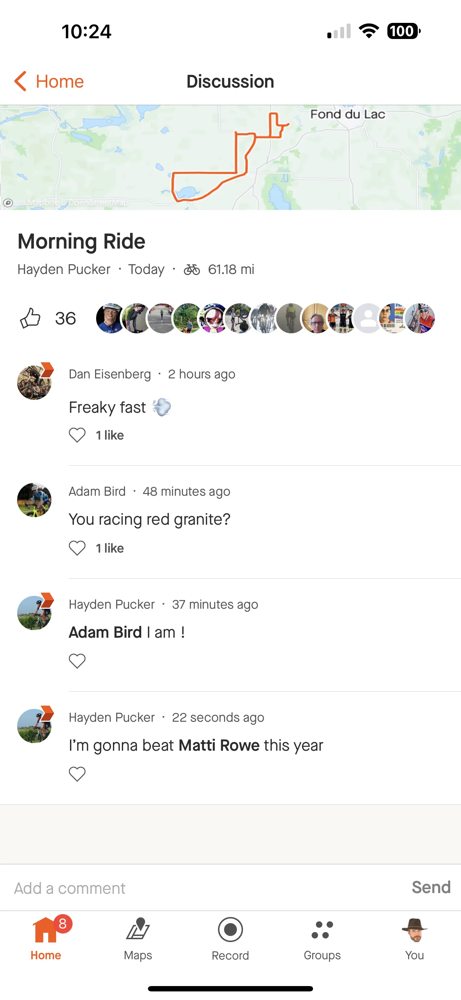
Quiz: When a tornado touches down, is it smarter to hide in your basement, or should you run outside shirtless and beg it to mow your house down?
Exactly. So, to respond to Hayden’s Strava post, I ran to my basement and tried to deflect Hayden’s rage to someone else, like Peter Olejniczak, lol.
As I rode to the race with the boys in the dark, out of nowhere, a hulking figure in the aero position knifed past us toward the 400 block, going about ten mph faster than we were. Hayden had arrived.
At the start line, I hid in the fourth row and would have remained hidden if my father hadn’t interrupted my subterfuge to walk over, wish me well, and then point for what felt like ages directly at Hayden while saying, “Isn’t that the guy that went the wrong way last year?”
The gun went off, and Hayden overtook the police escort and got pulled over for exceeding the speed limit on city streets. A few people were up the road as we entered the climb up Rib Mountain, and Hayden cooked the first ramp past the stop sign, got into the aero position, and then proceeded to hammer the first incline at breakneck speed. We were going so fast that I thought my skin would peel off.
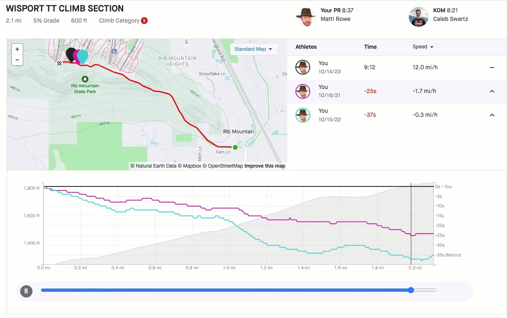
But then we hit steeper sections. Adam Bird, who finished third last year, put in a dig. Then we got to the wall on Rib, and he eased off. It was my turn to butter some biscuits.
I got out of the saddle and started cranking until my chain squealed. I couldn’t see what I was doing because my Garmin only showed that I was on a climb, but everything got quiet except for Peter’s creeping figure on my left. The lip of the entrance to Rib Mountain swept into view, close but many agonizing meters away.
I crossed it, eased off some, then pounded the next ramp and the next until I looked back and noticed the race had reduced to a group of five, including Hayden.
Reluctantly, I led into the single track and hike a bike section leading with Peter right behind me. The day before, my athletes and I had previewed the top of Rib and they had shredded me so badly they were ripping on me afterward.
“We found Matti’s kryptonite,” Forest said gleefully.
Well, that was pre-race adrenaline Matti. Race Matti was living by the ‘bones mend hit send’ philosophy, and somehow myself hucking down stairs that inwardly made me squeal.
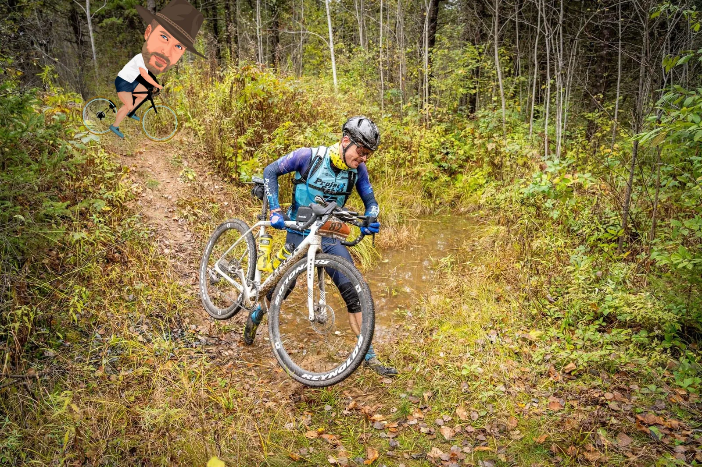
We disappeared into the fastness of the hiking trail, and when we emerged after bunny-hopping the railroad tracks, it was just he and I.
I knew Hayden couldn’t be far away, so I started taking anxious pulls with Peter and hoped the monster behind us didn’t start pulling into view. The next time I would see Hayden would be at the finish line.
What happened?
Hayden had a mechanical on the top end of the course just as he was closing down on Adam Bird, who was 3rd on the road. A stick got caught in his spoke and broke his wheel – go figure.
The supreme irony in all this is that he had to hike a bike for something like five miles and catch a ride with some nice hunters who dropped him off at the fourth and northernmost aid station where he met…
..Kurt and Jayne Rowe.
That’s right. My parents were running the aid stations for everyone in my crew in the race, and they ended up driving Hayden all the way back to the 400 block in Wausau.
“What are your names?” Hayden asked.
“Kurt and Jayne Rowe.”
“Rowe?”
“We’re Matti’s parents.”
“Matti’s parents!? Matti is my enemy!”
Hayden was one of the first people I saw when I crossed the line, and I chatted with him for a long time after the race. Afterward, my father gave him a ride back to his hotel.
“I thought Matti was a real asshole,” said Hayden. “But after talking to him, I realize he’s a nice guy.”
How much gets lost in what we don’t say to our fellow competitors? Do you know what I want for Hayden?
The world. Hayden has all the potential to ride in the freaking Tour de France. He’s a Wisconsin boy, just like me, and Wisconsin boys don’t get much respect around the country for our ability on the bike.
Hayden is young and has the world at his feet, and I’d like nothing more to help him in any way to become as fast as he can be. Really.
Cycling is cutthroat, and it’s really, really hard to break through to the top level, and everyone, no matter how talented, needs other people in their corner to help reach their potential.
Well, I’m in Hayden’s corner. I do not want to see him fail; I want him to become the fastest cyclist Wisconsin has ever seen.
As I pointed the car toward Colorado the next day, I couldn’t help but feel like I was leaving Wisconsin with one more friend.
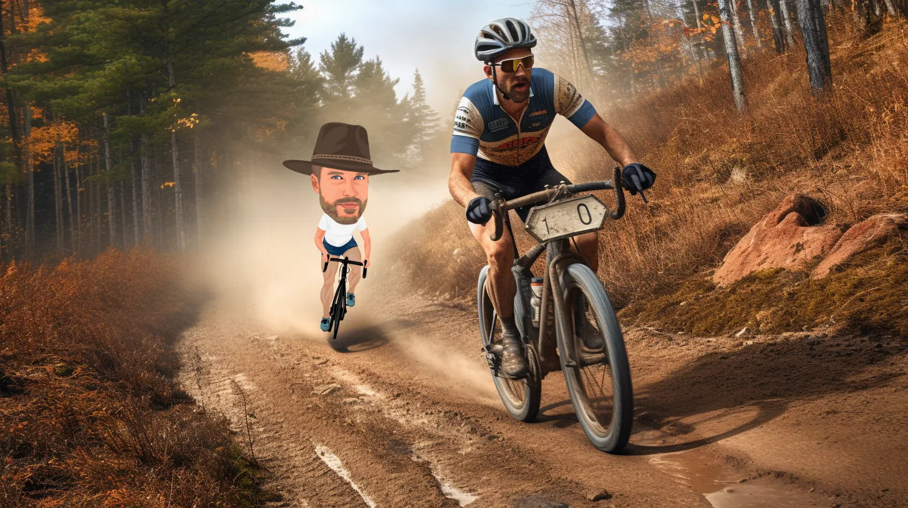
Peter and I headed South, 40 miles to go. I stole worrying glances behind us, expecting Hayden or Adam to appear at any moment, but the only thing my eyes met was empty space and the odd aggro pickup truck.
Peter and I had worked flawlessly together for seven hours to hold off any chasers, but without exchanging a word, we both knew the knives were about to come out. The Billy Goal Hills were coming.
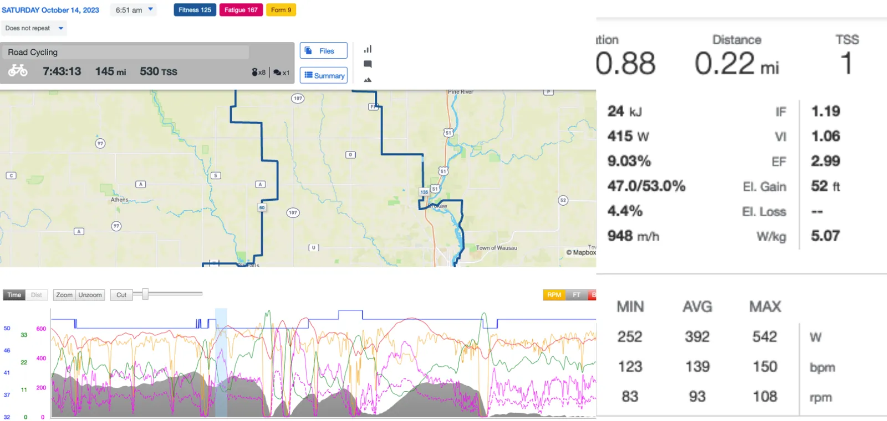
We started up the gravel pit climb, and Peter led it out, grinding out a pace that stung my legs and woke me up.
It wasn’t a visible attack, and Peter had never looked back or let on that he was accelerating, but for the first time in hours, my heart rate broke 150. It had begun.
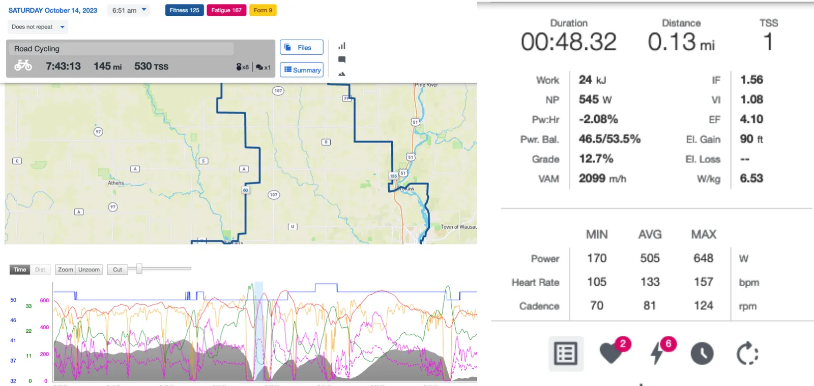
We soared down to the first Billy Goat. I passed where I used to ride bikes with my parents when I was 7, our first home, the turn down Kellar drive to my childhood home, the Chesbrough’s old house, and the Braatz log house, memories playing out in front of me which dissolved as soon as our speed checked into the violence of the steep grade. Peter got out of the saddle and started hammering.
It hurt. Oh my freaking God, it hurt. My legs boiled, and I struggled to find a good line to avoid having my back wheel slip out, but as we crested the top, I was back on terms and tried to avoid collapsing on my handlebars and showing weakness. Peter gave me a sidelong glance and plunged back down to the final boss of the Billy Goat Hills, which strained cruelly upward after the briefest of descents.
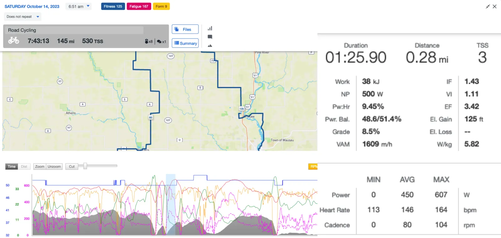
Again, Peter led, and again he rose out of the saddle, now his effort visible, and foot by foot, he slid away as my eyes glazed over. I could feel my arms starting to tingle and a screeching numbness moving up through my body while I grimly regretted waiting for him to get out of the bathroom four hours earlier.
One bike length, two, then three opened up, and I almost stopped pedaling before I remembered promising myself that I wouldn’t bitch out. I couldn’t feel my face, but I just told myself to spin, spin, spin, and gradually, I pulled him back into view, and as we turned onto Hillcrest Road, I was back on his wheel.
We both stopped as one and collapsed on our handlebars before I reluctantly took the lead into the 90-degree turn this year without using my foot as a brake.
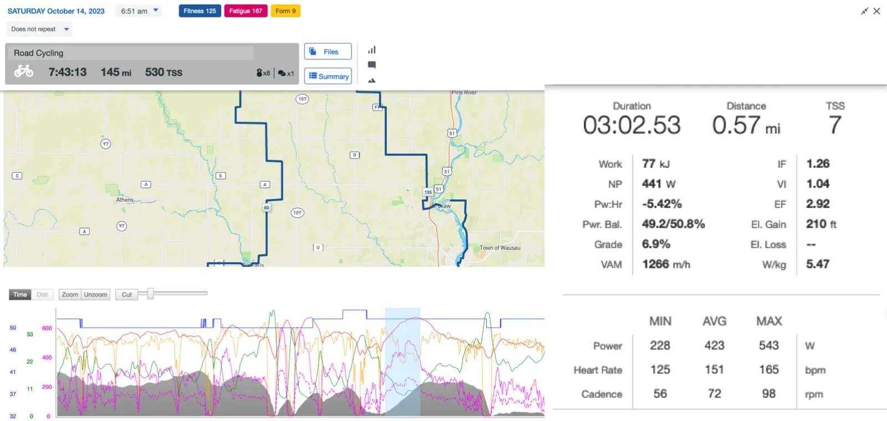
Brokaw loomed. It was my last chance. Like any respectable bike racer, I’d spent the week before obsessing over the racers in the start list, and the moment Peter’s name appeared, I looked him up and realized he was a certifiable unit that could sprint.
Me? I’ve broken 800 watts once for 5 seconds.
That meant that Brokaw was my last chance to drop his ass, which would generally be fine, except that Peter had given me free entries to Suffertown for three hills in a row.
He led up Brokaw, and herein lies my only regret. He began the climb steady but not hard. If I hadn’t been a coward, I would have gotten in the drops, let him pull away from me slightly, and then sprinted as hard as I could in and out of his draft and then railed the climb as hard as I could until the top where I would have thrown up but established a small gap that I could maybe hold until the finish.
But all I really wanted to do was crawl into the ditch and take a nap.
So I stayed in his wheel, spinning gently for far too long, until the guilt and shame of giving less than everything finally forced me to perform the worst attack possible.
Slowly, I emerged from his draft into a headwind, got out of the saddle, increasing the advantage of being in my draft, and comically rode past him in slow motion, grimacing and breathing all over myself, desperately trying to ride Peter off my wheel when I could barely stay on his even five minutes ago.
After the race, Peter revealed that he had been on tap out from that ‘attack,’ but when we crested the top of Brokaw Hill, I could barely pedal, so I wasn’t exactly missing an opportunity.
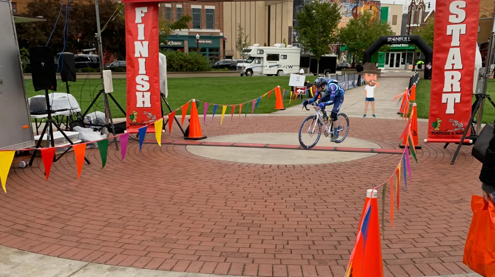
I had played all my cards. Now, all I had to do was beat someone who could actually sprint.
After the race, Hayden asked me why I didn’t do the super tuck maneuver on Peter that I did in 2022. I considered that, but the problem was that Peter super tucked the fast downhill into Wausau, so I had my hands full just staying on his wheel.
As we hit the finishing turns, I led, knowing full well what was coming while simultaneously knowing there wasn’t much I could do to stop it unless I hit him with a surprise attack or straight-up outsprinted him.
But he was too savvy, and the moment never seemed right to launch a sprint out of a corner. Peter is a crit hoss; I’m allergic to them.
After the final turn, Peter launched, and to my surprise, I was briefly on terms before I stopped my sprint in the confusion of crossing active streets into the 400 block. Peter blew my doors off and crossed the finish line, arms raised, a man worthy of the coveted 1st place Red Granite Grinder cutting board, and the love of his family.
Oh yeah, Peter isn’t the product of immaculate conception – his family on his father’s side lives in Wausau. Like me, he spent a lot of time here in his youth. In some ways, he grew up in Wausau, so he’d had this race on the calendar for some time.
I’m not the only one with a piece of their heart in Wausau, and seeing him surrounded by family and an absurd, fluff dog named Gnocchi dissipated any sting or regret from being second—or at least most of the sting.
I felt something strange – I think I was happy for Peter.
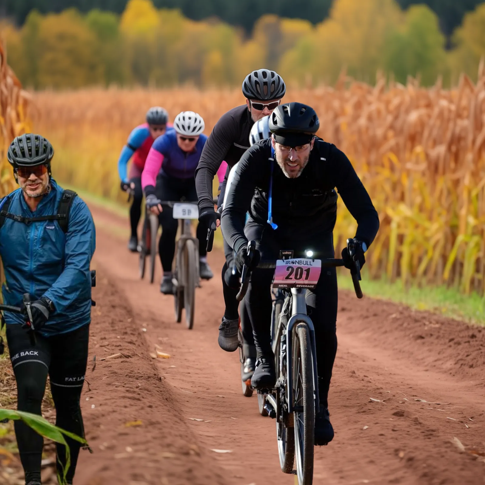
After too much wine at a dinner party, someone asked me, ” What is your mission in life?” Not exactly an icebreaker.
Yet, I wasn’t caught off guard because I’ve thought about it. My mission in life is to inspire more people to be active through gravel cycling.
The real drama of the day for me wasn’t whether I’d outfox Peter or if Hayden would catch us. It was how my brother and brother-in-law would do in their races.
This year, I didn’t just recruit some athletes all the way from Washington State (who freaking nailed it, BTW!), but I also convinced my brother and brother-in-law to sign up for the Red Granite Grinder 56 miler.
It was the first gravel race either of them had taken part in. For my brother, it was his first athletic competition since high school track over three decades ago. Neither embarrassed themselves in credible ways.
Sure, my brother wanted to go faster, and my brother-in-law only got third in his age group after basically racing off the couch, but that’s the nature of competition, isn’t it – whatever you do, you always want more?
The real highlight in the build-up to race day was watching them fuss over their equipment, clothing, bikes, nutrition, and all the little details required to execute a great race. Not because we felt like seasoned veterans who could purvey unsolicited wisdom down on the helpless noobs, but because of their bitchin’ vibes.
They were excited to be here, excited to compete, worried they’d miss a turn or forget a detail, and anxious about how to draft how crazy the corn maze would be if they were too cold and what they should do if they got a flat or another mechanical.
They embodied what racing should make you feel, which is especially refreshing for grizzled racing veterans who had long since forgotten the raw thrill of trying something new, hard, and scary.
Afterward, instead of rage quitting, both of them, unprompted, said they’d do at least four to five gravel races next year, no shit.
Gravel fever claims two more victims.
Quotes of the Week
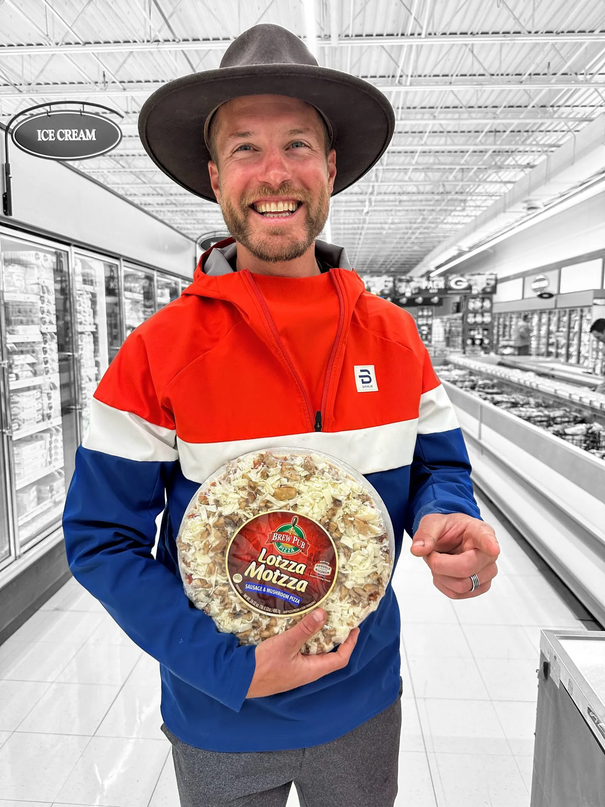
“Matti? Stop. Jesus. Can I show you something?”
Forest, after observing how I cut bell peppers.
“I will have four eggs, dry toast, two pancakes, four egg whites, turkey bacon, and breakfast ham. Jelly on the side. Can you repeat back what I said to you so I know you got my order right?”
~My brother, ordering breakfast at Era restaurant.
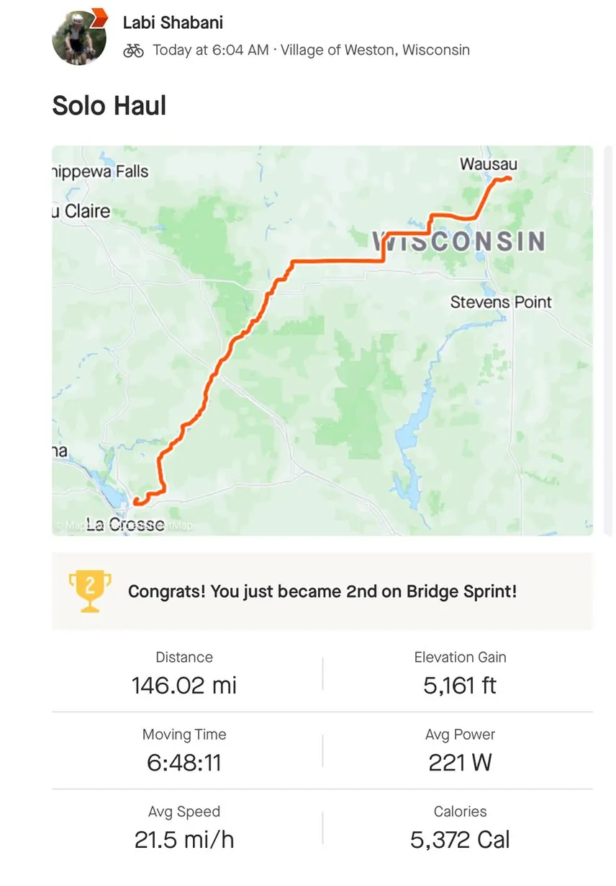
“I’m riding to La Crosse tomorrow since I lost my skewer.”
~Labi Shabani, who sadly couldn’t show up to RGG this year because he lost the front skewer on his gravel bike and road from Wausau to LaCrosse instead.
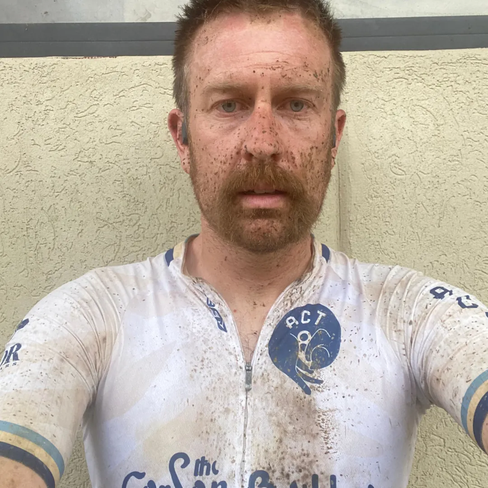
“You smell different when you’re awake.”
~Forest, to me in the morning. That easily made the top five creepiest things anyone has ever said to me.
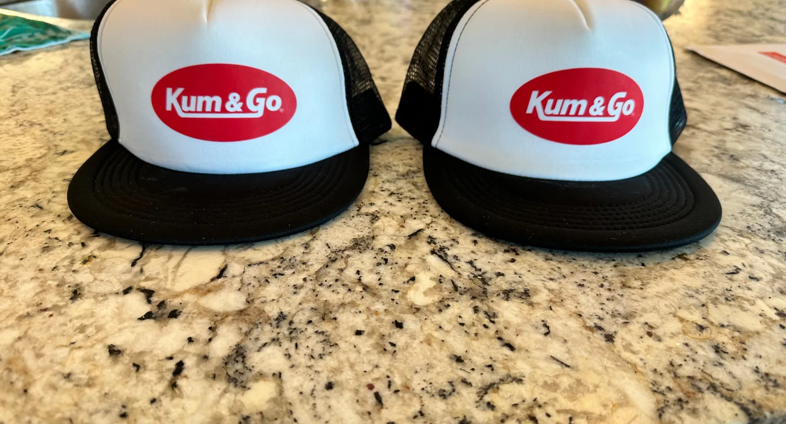
“Betsy is going to kill you.”
~My mother, upon seeing that I purchased two Kum&Go trucker hats for us to wear for couples photos.
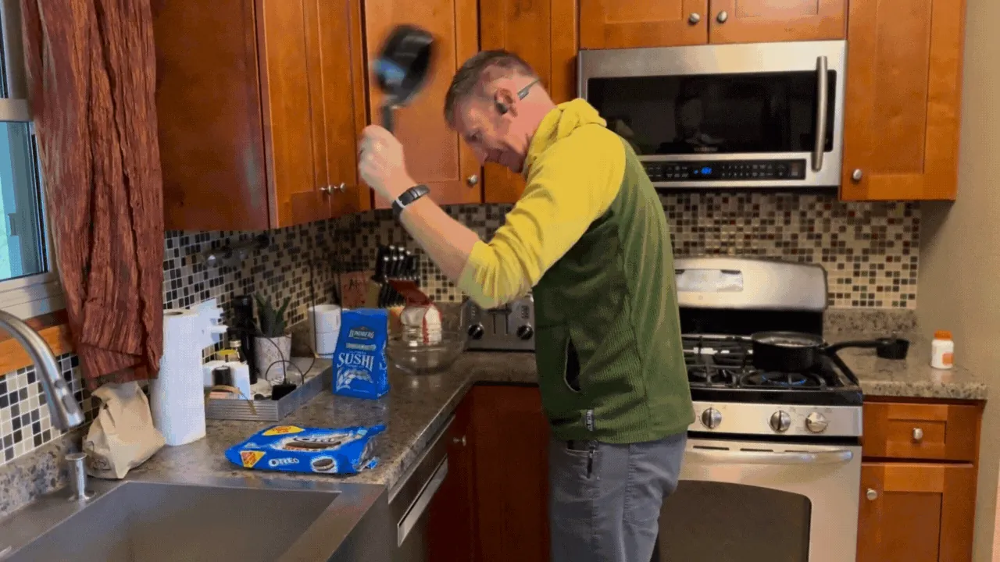
“Bam, Bam, Bam, Bam”
~Forest, breaking up the mega stuffed Oreos for his famous Oreo rice cakes.
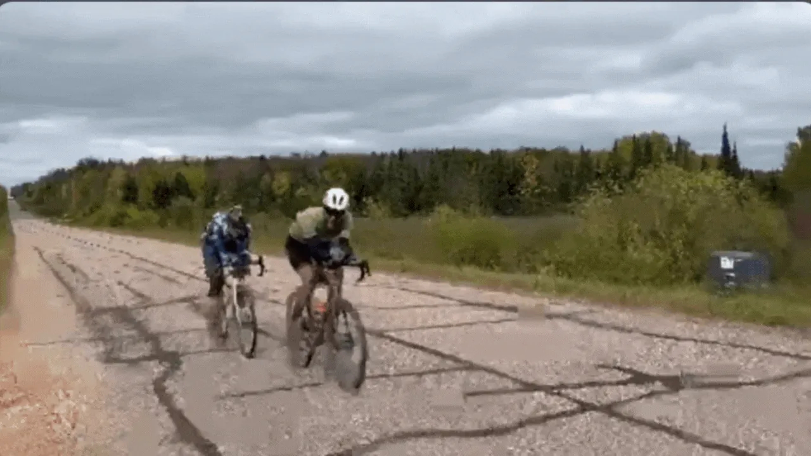
“WIN THIS MATTI!”
~Brian Krueger, Merrill resident, and parasocial Strava friend, randomly rode to a spot on the course to holler at me.
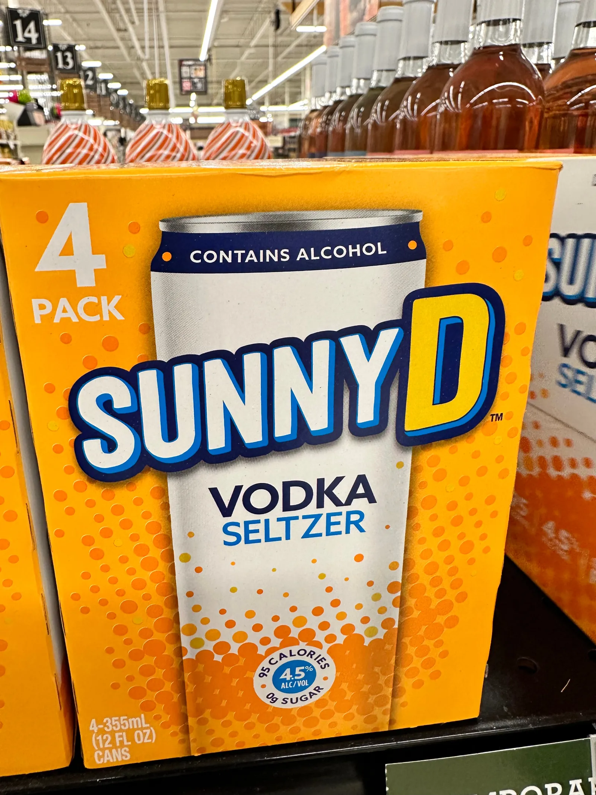
“We should get this for the post-race party.”
~Victor
Comments
1 comment from the original post. Comments are closed.
Brian Krueger ·
Nice write up and race! Was right at the end of my driveway cheering for you. Easy spot to watch from 😉